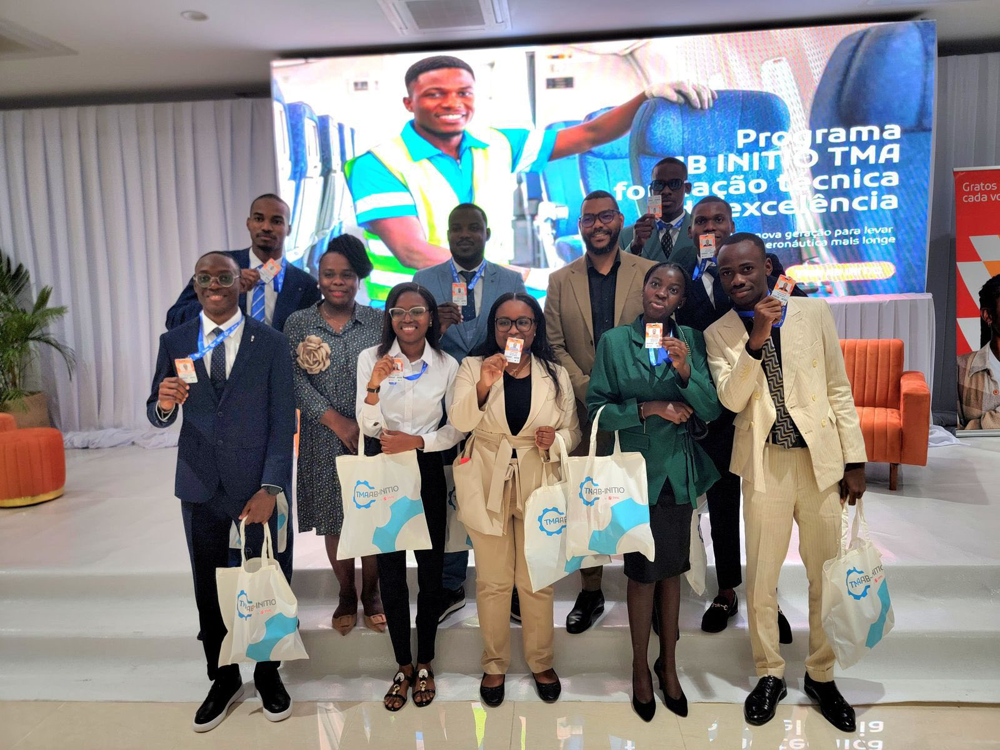

Dez estudantes do ITEL contratados pela TAAG como Técnicos de Manutenção Aeronáutica
Após a conclusão de um rigoroso processo de validação de perfil e aproveitamento académico, dez estudantes do Instituto de Telecomunicações (ITEL) foram oficialmente contratados pela TAAG – Linhas Aéreas de Angola para exercerem funções de Técnicos de Manutenção Aeronáutica. Os jovens selecionados iniciam, no próximo dia 03 de Novembro, uma formação de certificação europeia.
Leia mais